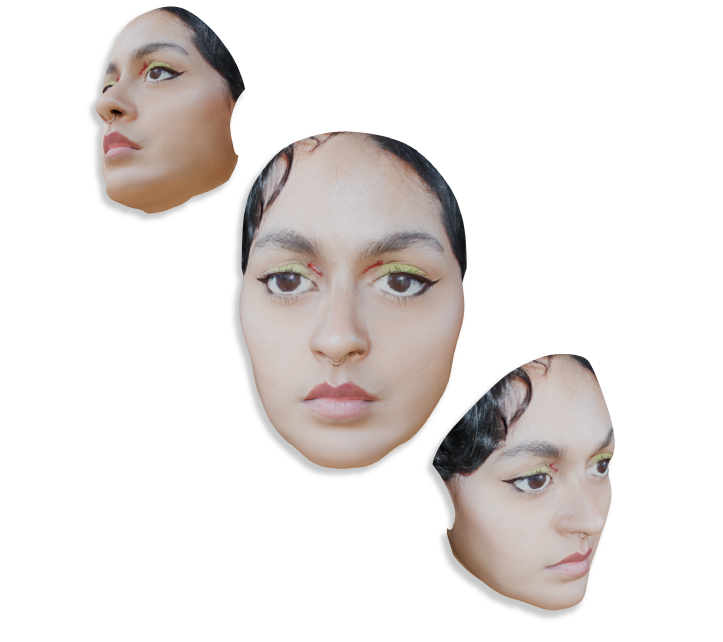
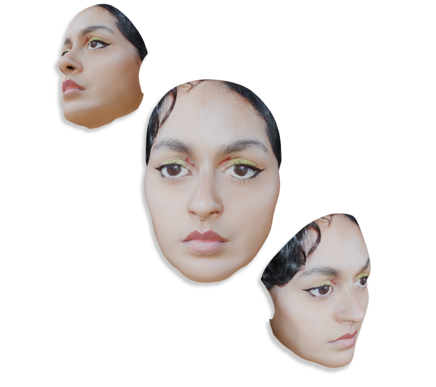

I am an artist and writer fascinated by the intersections of pop culture, politics, and visual art.
Playfully weaving elements of cuteness and whimsy into my work, I always seek to awaken a sense of inner child.
Inspired by internet culture across the years, I passionately long for a revival of the Web 1.0 spirit.
Above all, I envision a world where art is cherished for its creative resonance rather than its commodifiable value.